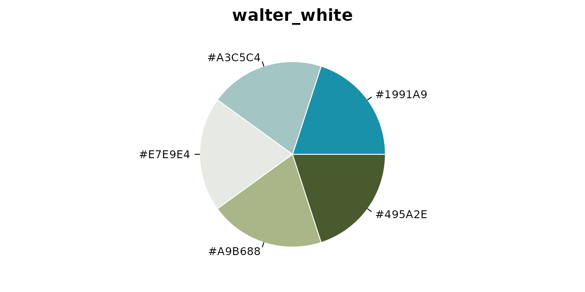
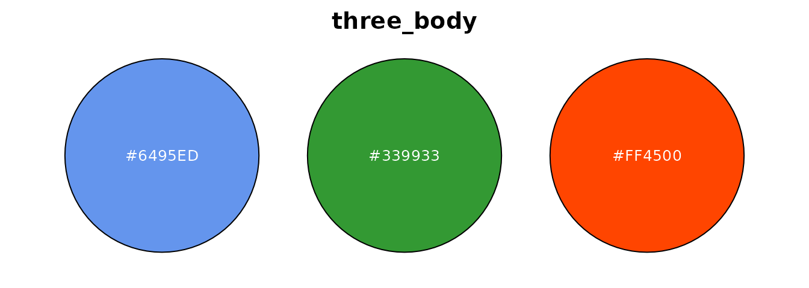
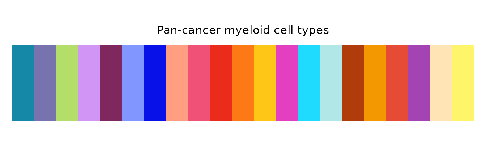
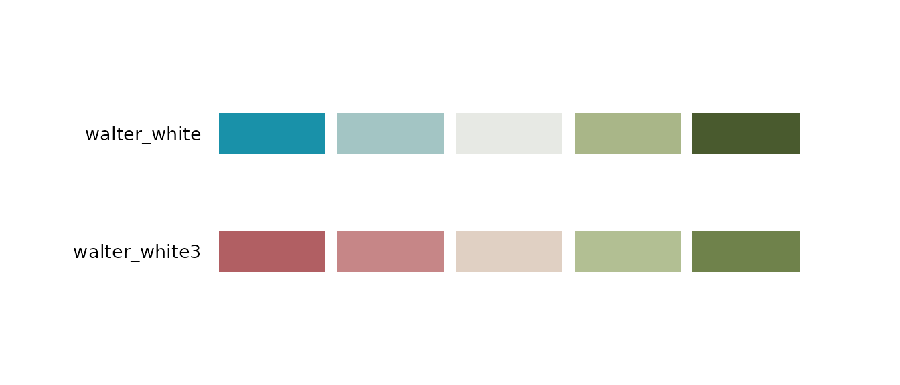

Overview
The palette module provides nine functions covering four areas:
| Area | Functions |
|---|---|
| Querying palettes |
get_palette(), list_palettes()
|
| Visualization |
preview_palette(), palette_gallery()
|
| Managing palettes |
create_palette(), remove_palette(),
compile_palettes()
|
| Color conversion |
hex2rgb(), rgb2hex()
|
Palettes are stored as JSON files organized under three
subdirectories — sequential/, diverging/, and
qualitative/ — and compiled into the palettes
package dataset via compile_palettes().
Every chunk below is evaluated when the vignette is built, so the output you see is what the current version actually produces.
1 Querying Palettes
get_palette() — Retrieve a palette by name
Returns a character vector of HEX color codes. If type
is omitted, the palette type is auto-detected. Use n to
take the first N colors from a larger palette.
# Auto-detect type
get_palette("babel")
#> [1] "#1688A7" "#7673AE" "#B3DE69" "#D195F6" "#7E285E" "#8197FF" "#0911E9"
#> [8] "#FF9E81" "#EF5276" "#EB2C1D" "#FD7915" "#FEC718" "#E43EC1" "#1FDBFE"
#> [15] "#B1E7E7" "#B03C0B" "#F39800" "#E64B35" "#A443B2" "#FFE4B5" "#FFF56A"
# Specify type explicitly, take only the first 5 colors
get_palette("babel", type = "qualitative", n = 5)
#> [1] "#1688A7" "#7673AE" "#B3DE69" "#D195F6" "#7E285E"When type is wrong, the error message tells you where
the palette actually lives:
get_palette("walter_white", type = "qualitative")
#> Error:
#> ! Palette "walter_white" not found under "qualitative", but exists under
#> "diverging". Try: `get_palette("walter_white", type = "diverging")`Requesting more colors than the palette contains raises an informative error rather than silently recycling:
get_palette("gene_red", type = "qualitative", n = 5)
#> Error:
#> ! Palette "gene_red" only has 2 colors, but requested 5.
list_palettes() — Browse available palettes
Returns a data frame with columns name,
type, n_color, and colors. It
reads the compiled package dataset, not a directory on
disk.
list_palettes()
#> name type n_color colors
#> 1 walter_white diverging 5 #1991A9,....
#> 2 walter_white3 diverging 5 #B15F63,....
#> 3 gene_red qualitative 2 #000000,....
#> 4 three_body qualitative 3 #6495ED,....
#> 5 walter_white2 qualitative 5 #5AB5BF,....
#> 6 babel qualitative 21 #1688A7,....
#> 7 mitonuclear_blue sequential 6 #EEF4FB,....
#> 8 mitonuclear_orange sequential 6 #F8E7E3,....Filter by one or more types with the type argument:
list_palettes(type = "qualitative")
#> name type n_color colors
#> 1 gene_red qualitative 2 #000000,....
#> 2 three_body qualitative 3 #6495ED,....
#> 3 walter_white2 qualitative 5 #5AB5BF,....
#> 4 babel qualitative 21 #1688A7,....
list_palettes(type = c("sequential", "diverging"))
#> name type n_color colors
#> 1 walter_white diverging 5 #1991A9,....
#> 2 walter_white3 diverging 5 #B15F63,....
#> 3 mitonuclear_blue sequential 6 #EEF4FB,....
#> 4 mitonuclear_orange sequential 6 #F8E7E3,....Results are sorted by type, n_color, and
name by default. Set sort = FALSE to keep the
original file order.
2 Visualization
preview_palette() — Visualize a single palette
Plots a single palette using one of five styles: "bar"
(default), "pie", "point",
"rect", or "circle". Returns NULL
invisibly — called for the plotting side effect.
preview_palette("gene_red", plot_type = "rect")
preview_palette("walter_white", type = "diverging", plot_type = "pie")
preview_palette("three_body", n = 3, plot_type = "circle")
Supply title to override the default title (which is the
palette name):
preview_palette("babel", plot_type = "rect",
title = "Pan-cancer myeloid cell types")
palette_gallery() — Browse all palettes at once
Renders a paged gallery of all palettes and returns a named list of ggplot objects (one per page). Useful for picking colors interactively.
plots <- palette_gallery()
#> ℹ Type sequential: 2 palettes -> 1 page(s)
#> ✔ Built "sequential_page1"
#> ℹ Type diverging: 2 palettes -> 1 page(s)
#> ✔ Built "diverging_page1"
#> ℹ Type qualitative: 4 palettes -> 1 page(s)
#> ✔ Built "qualitative_page1"
names(plots)
#> [1] "sequential_page1" "diverging_page1" "qualitative_page1"Access individual pages from the returned list:
plots[["qualitative_page1"]]
Filter by type and control how many palettes appear per page. Set
verbose = FALSE to suppress progress messages when calling
palette_gallery() programmatically:
pages <- palette_gallery(type = "diverging", verbose = FALSE)
pages[["diverging_page1"]]
3 Managing Palettes
create_palette() — Save a custom palette
Writes a named palette as a JSON file under
color_dir/<type>/<name>.json. The directory is
created automatically if it does not exist.
temp_dir <- file.path(tempdir(), "palettes")
create_palette("my_blues", "sequential", c("#deebf7", "#9ecae1", "#3182bd"),
color_dir = temp_dir)
#> ✔ Palette saved: /tmp/RtmpxgTzyJ/palettes/sequential/my_blues.json
create_palette("my_trio", "qualitative",
c("#E64B35", "#4DBBD5", "#00A087"),
color_dir = temp_dir)
#> ✔ Palette saved: /tmp/RtmpxgTzyJ/palettes/qualitative/my_trio.jsonNote that this writes a file; it does not register
the palette with the package. get_palette() and
list_palettes() read the compiled dataset, so a palette in
your own directory only becomes visible once that directory is compiled
— see compile_palettes() below.
By default, saving over an existing name raises an error. Pass
overwrite = TRUE to replace it:
create_palette("my_blues", "sequential", c("#c6dbef", "#6baed6", "#2171b5"),
color_dir = temp_dir, overwrite = TRUE)
#> ℹ Overwriting existing palette: "my_blues"
#> ✔ Palette saved: /tmp/RtmpxgTzyJ/palettes/sequential/my_blues.json
# Without overwrite = TRUE
create_palette("my_blues", "sequential", c("#deebf7", "#9ecae1", "#3182bd"),
color_dir = temp_dir)
#> Error:
#> ! Palette "my_blues" already exists. Use `overwrite = TRUE` to replace.The function invisibly returns a list with path and
info so the result can be captured when needed.
remove_palette() — Delete a palette JSON
Removes a palette JSON file by name. If type is omitted,
all three type directories are searched in order.
remove_palette("my_blues", color_dir = temp_dir)
#> ✔ Removed "my_blues" from sequential
# Specify type to skip the search
remove_palette("my_trio", type = "qualitative", color_dir = temp_dir)
#> ✔ Removed "my_trio" from qualitativeIf the palette is not found in any directory, a message is issued and
the function returns FALSE invisibly:
remove_palette("nonexistent", color_dir = temp_dir)
#> ! Palette "nonexistent" not found in any type.
compile_palettes() — Build the palette dataset
Reads all JSON files under palettes_dir/sequential/,
palettes_dir/diverging/, and
palettes_dir/qualitative/, validates them, and returns a
structured list. This is the function used in
data-raw/palettes.R to rebuild the palettes
package dataset via usethis::use_data().
compiled <- compile_palettes(
palettes_dir = system.file("extdata", "palettes", package = "biopalette")
)
#> ✔ Compiled 8 palettes: Sequential=2, Diverging=2, Qualitative=4The return value is a named list with three elements —
sequential, diverging, and
qualitative — each of which is a named list of HEX
vectors:
names(compiled)
#> [1] "sequential" "diverging" "qualitative"
compiled$qualitative[["three_body"]]
#> [1] "#6495ED" "#339933" "#FF4500"Validation is strict: a JSON file with a missing field, an unknown type, or an invalid HEX code aborts the whole compile rather than being skipped, so a broken file can never quietly drop a palette out of the dataset. Duplicate palette names within the same type are a softer case — they emit a message and the last file read wins.
4 Color Conversion
hex2rgb() — HEX to RGB data frame
Converts a character vector of HEX codes to a data frame with columns
hex, r, g, b. Both
6-digit (#RRGGBB) and 8-digit (#RRGGBBAA)
codes are accepted; the alpha channel is silently ignored.
hex2rgb("#1688A7")
#> hex r g b
#> 1 #1688A7 22 136 167
hex2rgb(c("#1688A7", "#FF4500", "#339933"))
#> hex r g b
#> 1 #1688A7 22 136 167
#> 2 #FF4500 255 69 0
#> 3 #339933 51 153 51The # prefix is required; codes that fail the pattern
and NA values are both reported as invalid:
hex2rgb("1688A7")
#> Error:
#> ! `hex` contains invalid HEX codes: "1688A7".
rgb2hex() — RGB to HEX color codes
The symmetric counterpart to hex2rgb(). Accepts either a
numeric vector of length 3 or the data frame returned by
hex2rgb(). Non-integer values are rounded before
conversion.
# Single color as a length-3 vector
rgb2hex(c(22, 136, 167))
#> [1] "#1688A7"
# Round-trip: HEX -> RGB -> HEX
rgb2hex(hex2rgb(c("#1688A7", "#FF4500")))
#> [1] "#1688A7" "#FF4500"
# Non-integer values are rounded
rgb2hex(c(21.7, 136.2, 167.4))
#> [1] "#1688A7"Typical failure cases for the vector form:
And for the data frame form:
rgb2hex(data.frame(r = 22, g = 136))
#> Error:
#> ! `rgb` must have columns "r", "g", and "b". Missing: "b".
rgb2hex(data.frame(r = 22, g = 136, b = 300))
#> Error:
#> ! Column "b" in `rgb` must be numeric with values in [0, 255].5 A Combined Workflow
The palette and conversion functions compose naturally. The example below picks a qualitative palette, converts its colors to RGB, lightens them, and saves the result as a new palette.
# 1. Retrieve a qualitative palette
colors <- get_palette("three_body", type = "qualitative")
colors
#> [1] "#6495ED" "#339933" "#FF4500"
# 2. Convert to RGB for numeric manipulation
rgb_df <- hex2rgb(colors)
rgb_df
#> hex r g b
#> 1 #6495ED 100 149 237
#> 2 #339933 51 153 51
#> 3 #FF4500 255 69 0
# 3. Lighten each color by blending 50% toward white
rgb_light <- rgb_df
rgb_light[c("r", "g", "b")] <- (rgb_df[c("r", "g", "b")] + 255) / 2
# 4. Convert back to HEX
light_hex <- rgb2hex(rgb_light)
light_hex
#> [1] "#B2CAF6" "#99CC99" "#FFA280"
# 5. Save the derived palette to your own directory
create_palette("three_body_light", "qualitative", light_hex,
color_dir = temp_dir)
#> ✔ Palette saved: /tmp/RtmpxgTzyJ/palettes/qualitative/three_body_light.json
# 6. Compile that directory to make the palette usable.
# create_palette() wrote a file; compile_palettes() is what turns a
# directory of files into the list the query functions work with.
mine <- compile_palettes(temp_dir)
#> ✔ Compiled 1 palette: Sequential=0, Diverging=0, Qualitative=1
mine$qualitative[["three_body_light"]]
#> [1] "#B2CAF6" "#99CC99" "#FFA280"
# 7. Clean up
unlink(temp_dir, recursive = TRUE)To make a palette part of the package itself rather than a local
directory, write its JSON under inst/extdata/palettes/ and
rebuild the dataset with data-raw/palettes.R.